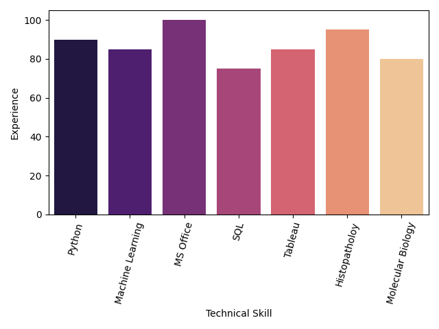

About me
I am a PhD candidate in Biomorfological and Surgical Sciences at the University of Naples Federico II. My research focus is the analysis of Oral Squamous Cell carcinoma via both pathology-dedicated platforms (as QuPath or Leica Genie) and "pure" computational pathology approaches (mainly Python and its libraries). Moreover, have experience in data analysis and visualization using SPSS, Tableau and Python's libraries Matplotlib, Seaborn, Numpy, Scikit-Learn, and Pandas.
Before starting my PhD, I graduated in Medical Biotechnologies (summa cum laude) defending a thesis entitled "A digital pathology approach to oral squamous cell carcinoma", quantitatively analysing CAF-1\p60 levels in OSCC Samples. During the internship, I also worked in the "wet" lab, performing H\& E and IHC staining, tissues embedding and sectioning, and HPV detection with Inno-Lipa.
Formerly, I graduated in Health Biotechnologies (summa cum laude) after an experience as an Erasmus Exchange student at Sabanci University, Istanbul. There, I had the opportunity to work in a molecular biology laboratory, experiencing techniques as Dual Luciferase Assay, western blotting, DNA electrophoresis.Here you can find an updated version of my CV. More questions? Please, connect with me with any of the link in the footer
My skills:
